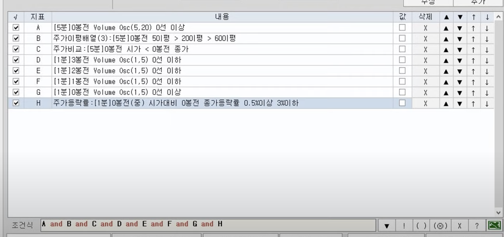
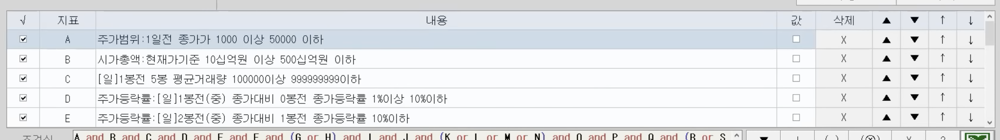
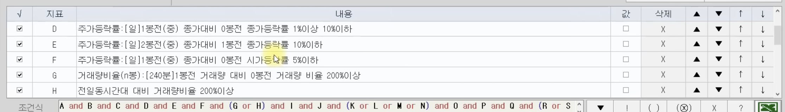
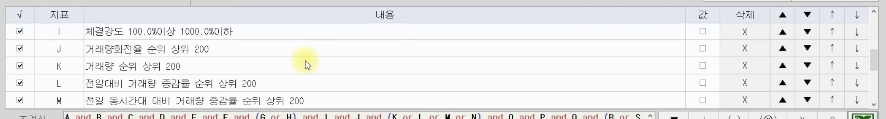
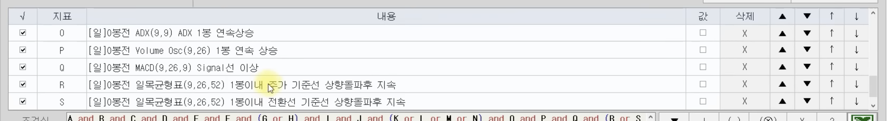
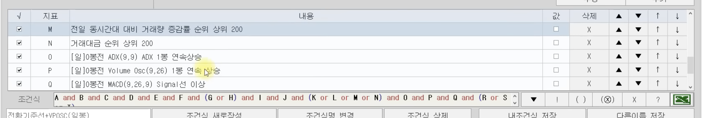

검식색 공유 사이트
https://muryostock.com/bbs/board.php?bo_table=condition&sca=%EA%B3%B5%EA%B0%9C&page=3
검색식
- 30일 이내의 주가가 전고점의 90%에 도달한 경우
상승 장악형 패턴 검색식
https://blog.naver.com/modoofix/222938043187
https://blog.naver.com/gobulgobul/222506651852
추세추종 종목 검색식
- 현재가가 50일선보다 위
- 200,150,50일 이평정배열
- 52주 최저가를 기준으로 30% 이상
- 52주 최고가를 기준으로 -25% 이상
급등주 조건 검색식
https://blog.naver.com/premier_stock/222677818961
장시작 20분 전 조건식 돌리면 급등주 또는 3~5% 상승주 검색식
- 예상체결가 상승률(기준가 대비) 5(%,원) 이상
- 예상체결금액 10000천원 ~ 99999999천원
- 예상체결량 100000주 ~ 999999999주
LRL17%골든
https://alongwaytogo.tistory.com/331
- 주가범위 0일전 종가가 1000일 이상 3000000 이하
- [일]0봉전 bollinger band(26,2) 종가가 중심선이상
- [일]0봉전 5봉 평균거래량 2000000이상 999999999999이하
- [일]0봉전 LRL(종가, 17)이 17 단순이평선 상향돌파
- [일]0봉전 일목균형표(9,26,52) 주가 > 기준선
- [일]0봉전 일목균형표(9,26,52) 주가 > 선행스팬 2
- [일]0봉전 MACD(12,26,9) Signal 0선 이상
- 기간내 등락률: [일] 0봉전 1봉이내 시가대비종가 3%이상 10%이하를 1회 이상
- [일]0봉전 Parabolic(0,02,0.2) 1봉 연속상승
모두 and
예상급등주
https://blog.naver.com/ggugong/222391798388
전날 관심있는 종목을, 관심종목 리스트에 추가하고, 이 조건식을 입력한 뒤에, 대상변경을 관심종목으로 등록합니다.
그럼 지저분하게 움직이는 종목들은 어느 정도 걸러집니다. 매수 타점은 알아서 판단
지표 내용
A 주가등락률:[일]1봉전(중) 종가대비 0봉전 시가등락률 1%이상
B 주가등락률:[일]0봉전(중) 시가대비 0봉전 종가등락률 0.5%이상
C 주가이평배열(3):[1분]0봉전 1이평 > 2이평 > 3이평
D [1분]0봉전 Volume Osc(10,60) 0선 이상
A and B and C and D
쌍바닥
A 상세이평돌파:[일]0봉전 단순(종가 5)이평이 단순(종가 20)이평을 30봉 이내 골든크로스 2회 이상
바닥 상승위주(조정후 상승시작)
A [일]0봉전 Envelope(5,0.5) 종가가 Envelope 하한선 상향돌파
B [일]0봉전 Envelope(5,1) 종가가 Envelope 하한선 상향돌파
C [일]0봉전 Envelope(5,2) 종가가 Envelope 하한선 상향돌파
D [일]0봉전 Envelope(5,3) 종가가 Envelope 하한선 상향돌파
E [일]0봉전 Envelope(5,3) 상한선 1봉 연속하락
F [120분]0봉전 Envelope(5,3) 상한선 1봉 연속하락
G [15분]0봉전 Envelope(5,3) 상한선 1봉 연속하락
H [120분]0봉전 Stochastic slow(12,5,5) slow %K 1봉 연속상승
I [120분]0봉전 William's %R(20) 1봉 연속상승
J 주가등락률:[일]1봉전(중) 종가대비 0봉전 종가등락률 17%이상
K 체결강도 90%이상 1000.0%이하
L 주가등락률:[일]1봉전(중) 종가대비 0봉전 종가등락률 17%이하
M 체결강도 110%이상 1000.0%이하
N 주가범위:0일전 종가가 1000 이상 55000 이하
O 주가등락률:[일]0봉전(중) 시가대비 0봉전 종가등락률 0.5%이상
P 주가등락률:[일]0봉전(중) 저가대비 0봉전 종가등락률 1%이상
Q 주가등락률:[일]1봉전(중) 종가대비 0봉전 종가등락률 1.5%이상
R 거래량비율(n봉):[일]1봉전 거래량 대비 0봉전 거래량 비율 80%이상
S 기간내 평균 거래량비율:[일]0봉전 5봉이내에서 1평균거래량대비(기준봉포함) 110%이상 1회 이상
(A or B or C or D) and !E and !F and !G and H and I and ((J and K) or (L and M)) and N and (O or P or Q) and (R or S)
고점애서 매도관점
고점에 하락하는 것으로 만들어여 합니다.
A [1분] 주가비교 [0봉전] 종가=종가>시가
B [1분] 주가비교 [0봉전] 고가=고가>(고가+종가+저가)/3
C [1분] 주가비교 [0봉전] 종가=종가>(고가+종가+저가)/3
세가지를 or로 묶어서 설정합니다. 3가지 중에 하나가 걸리면 매도하게 하는 것입니다.
불륨 오실레이터 눌림목 매수타점 조건식

볼륨 오실레이터 뇌피셜
A 볼륨 오실레이터 5봉전부터 지금까지 마이너스
B 이평선 정배열
볼륨오실레이터(Volume Oscillator) 완벽 정리/지표 신호 설정 및 조건검색식
https://www.youtube.com/watch?v=Ba5qdUwRoTA





트레이딩 뷰
https://blog.naver.com/soosaek6896/222954213219